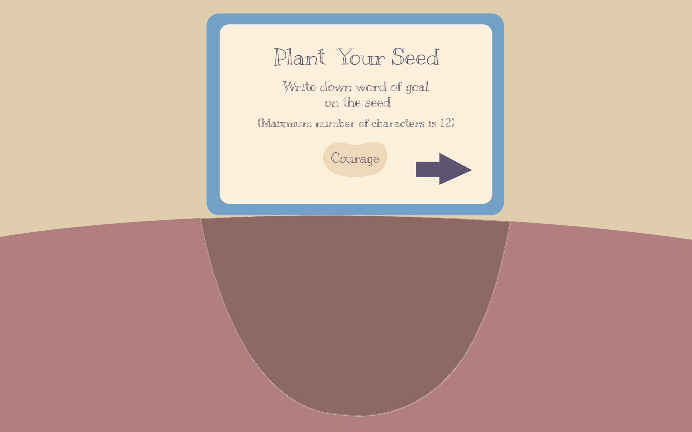
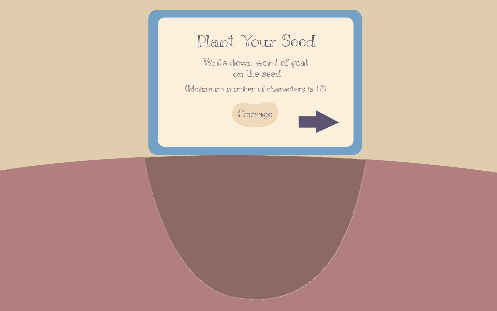

Inspiration & Interactivity
“If there is a hole on a ground remaining unfilled, people may question its presence, wondering 'Why is there a hole?' Yet, once the hole is filled, they will understand, acknowledging 'That is why there was a planting hole.'” The project began from this small observation of a planting hole. As a planting hole is never wasted but used to bloom a new life, this game seeks to encourage the players to find hope in greater purpose their holes can hold. This project also drew inspiration from childhood memories of message beans and drawing diary homework. Message beans represented monthly goals, with actions taken at each watering until they reached full growth. Additionally, the drawing diary homework encouraged me to document nice action taken over the weekend to cultivate a positive self-image. These memories, combined with the imagery of planting holes, have formed the foundation of the game's core concept.
 

Game Progress
Throughout the game, the players interactively engage with visualization of invisible feelings. As the game begins, the player enters into the ‘Feel your hole’ scene where they visit 6 different categories of emotions and select 3 emotional holes. The selected holes fall down into the ‘Fill your hole’ scene encouraging transition from reflection to action. Drawing the connection among their holes, they are asked to plant a seed with their word of goal written on it. Subsequently, they are prompted to take an action to fill their selected hole and upload an accompanying image, which is ground into the sand filling the hole. Upon completion of filling the hole, their planted seed sprouts into a vibrant plant.
Visual Concept
The design of the "Feel your hole" scene draws inspiration from the mental health term "Spiralling," which describes a cycle of negative thought patterns that can escalate and become overwhelming (source: https://www.calm.com/blog/how-to-stop-spiraling). To visualize the often overlooked feelings due to its invisible nature, I incorporated the spiral motif, represented by a deep hole at the center with surrounding cures. As a spiral can be seen as moving inward or outward from the hole, I designed for users to enter into each hole for inner reflection and take the holes outside of the hole for action.
During the transition into the ‘Fill your hole’ scene, I incorporated the famous perception test image to visually symbolize the planting hole imagery. This illusion, where the same image can be perceived as either a glass or a face, mirrors the concept of the planting hole—whether it remains unfilled or is eventually filled changes our perception of the hole. By inserting this image in the middle of the transition, I aimed to signify the start of thought transition. Using this visual metaphor, I sought to reframe the idea of our emotional holes from mere negative feelings to vessels for a new perspective.